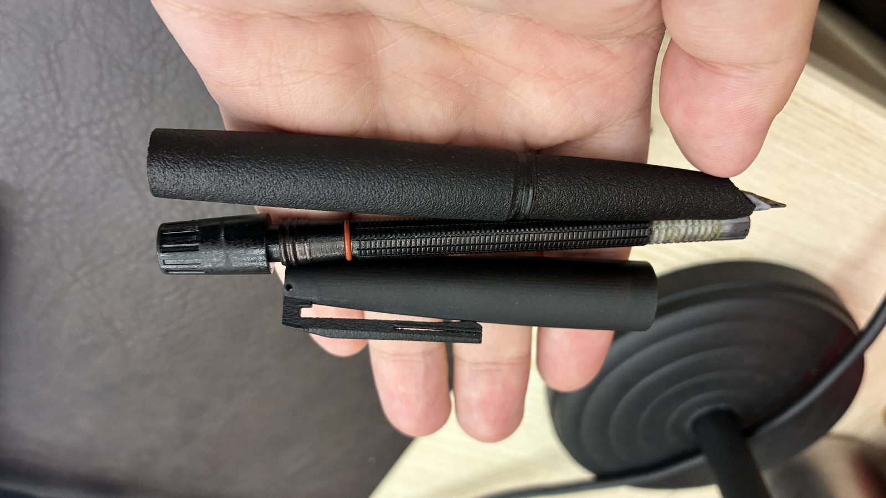
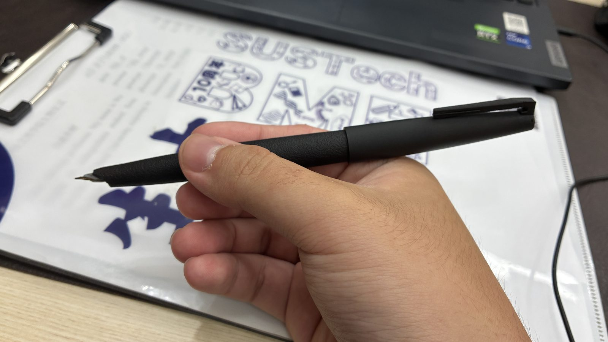

An open-source 3D-printed fountain pen. One STL, CC BY 4.0.

parts2026.10

write test2026.10
The idea
wf672 is an original 3D-printed fountain pen. Download the STL from Releases and build your own — everything after that is yours to explore.
WhiteFeather (wf71 and its siblings) is the auto-suction line Dandong Pen Factory has produced since 1968, distinguished by the first grooved capillary core — the "corn cob" structure; wf672 replicates that classic structure and improves on it.